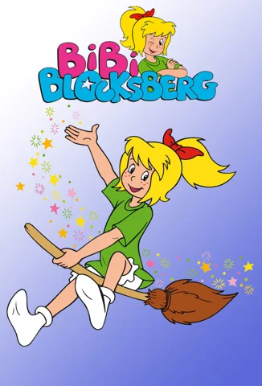
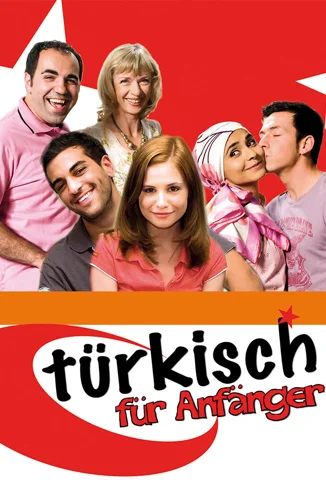
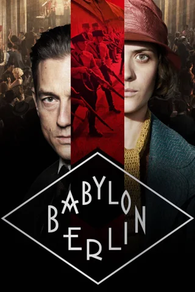

Лучшие и худшие сериалы для немецкого
С этого начни: Peppa Wutz, Nicos Weg, Türkisch für Anfänger. А это пока отложи: Dark, Babylon Berlin, Tatort — сленг, диалекты и быстрая речь.
Кодовое слово из ролика: КИНО
Цель: сериал без субтитров
Не за месяц, но путь понятный: на каждом уровне свой сериал и своя грамматика. Выбери, где ты сейчас.
 A1Die Biene Maja
A1Die Biene MajaАртикли, настоящее время, слова для быта.
Внутри: платформа A0–A2
A2Bibi BlocksbergPerfekt, предлоги, фразы для разговора.
Внутри: платформа A0–A2
B1Türkisch für AnfängerPräteritum, Plusquamperfekt, придаточные.
Внутри: платформа B1–C1- B2Fack ju Göhte
Пассив, Konjunktiv II, сленг и быстрая речь.
Внутри: платформа B1–C1 
C1Babylon BerlinСложная лексика, диалекты, речь без адаптации.
Внутри: платформа B1–C1- ЦельBabylon Berlin без субтитров
С A1 или A2 до цели нужны обе платформы: A0–C1 за 30 € вместо 40 €. В каждой грамматика по порядку, слова с аудио и фильмы по уровням.
С B1 и выше хватит платформы B1–C1 за 20 €. Внутри грамматика по порядку, слова с аудио и фильмы, книги, подкасты по уровням.
Купить StellasМаршрут по уровням
- 01
Начни с мультфильмов
Peppa Wutz и Die Biene Maja: медленная речь даже на A1.
- 02
Потом сериалы для изучающих
Nicos Weg и Extr@ auf Deutsch сняты специально для учащихся.
- 03
Через полгода — без адаптации
Türkisch für Anfänger и Good Bye, Lenin!, а Dark — после B2.
Смотришь с русскими субтитрами и думаешь, что учишь?
Сериал на немецком включён, но глаза весь вечер читают русский текст, а уши отдыхают. Через сезон понятно столько же, сколько в начале. В Stellas фильмы, книги и подкасты разложены по уровням, а слова к ним можно учить с аудио: смотришь своё и слышишь знакомое.
Купить Stellas за 30 €Подготовка к экзамену внутри
Аудирование есть в каждом экзамене: сериал своего уровня с немецкими субтитрами — тренировка части Hören. В платформе есть отдельный блок по экзаменам: формат, типичные ошибки, шаблоны писем и устной части.
- 120гайдов Goethe
- 89гайдов telc и DTZ
- 60гайдов ÖSD
- 40пробных тестов с разбором
- Lesen
- Hören
- Schreiben
- Sprechen
«Мои ошибки» собирает вопросы, на которых ты ошибся, чтобы повторить их перед экзаменом.
Что пишут ученики


Цена: один раз и навсегда
Обе вместе (2)
Stellas · A0–C1- 340+ гайдов A0–C1
- 7500+ слов с аудио и транскрипцией
- фильмы, книги, подкасты по уровням
- трекер и повторения в Notion, офлайн
- 269 гайдов к экзаменам, 40 пробников
- бонус: A0–A2 на украинском
40 €30 €
Частые вопросы
(01)С какими субтитрами смотреть?
С немецкими. Русские выключают слух: глаз читает быстрее, чем ухо слышит.
(02)Почему Dark в «пока отложи»?
Запутанный сюжет и длинные диалоги: на A2–B1 почти всё внимание уходит на сюжет, а не на язык. Вернись к нему после B2.
(03)Где смотреть?
Зависит от страны. Nicos Weg бесплатно на ютубе у DW, часть передач — в медиатеках ARD и KiKA, фильмы — на стримингах.
(04)Сколько серий в день?
Одну, но внимательно: сцену дважды и пять фраз в тетрадь. Это лучше трёх серий фоном.